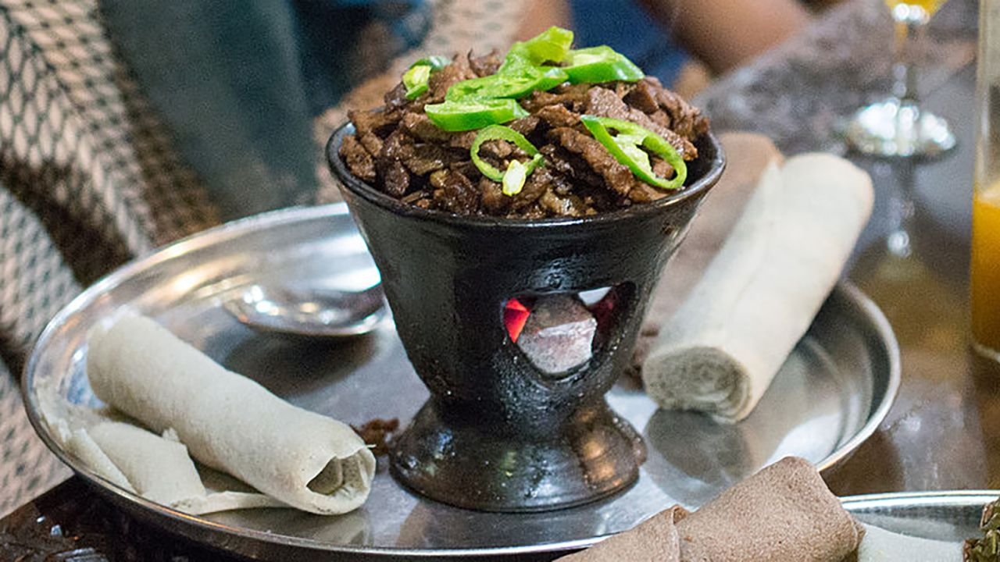

Shekla tibs is a popular Ethiopian dish made with cubed marinated beef that is sautéed with onions, peppers, and spices.
The dish is typically served with injera, a sourdough flatbread that is a staple of Ethiopian cuisine.
It comes in a variety of forms, varying in type, size or shape of the cuts of meat used, and can range from hot to mild or contain little to no vegetables.
Ingredients:
- Beef: 1 lb. beef, cubed
- Onion: 1 onion, chopped
- peppers: 1-2 hot peppers, chopped
- Garlic: 2 cloves garlic, minced
- Berbere: 1 tbsp. berbere spice mix (or to taste)
- Paprika: 1 tbsp. paprika
- Salt: Salt and pepper, to taste
- Oil: Oil, for cooking
- InjeraInjera, for serving
Instructions:
- In a bowl, mix the cubed beef with the berbere spice mix, paprika, salt, and pepper. Let it marinate for at least 30 minutes (or overnight in the fridge for more flavor).
- In a large skillet, heat some oil over medium-high heat. Add the marinated beef and cook until browned on all sides, stirring occasionally.
- Add the chopped onion, hot peppers, and minced garlic to the skillet, and continue cooking until the onions are translucent.
- Reduce the heat to medium-low, cover the skillet, and let the shekla tibs simmer for a few more minutes until the beef is tender and cooked through.
- Serve the shekla tibs hot with injera on the side.
Return to top
Return to main page